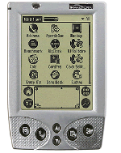

| HandEra 330
I thought long and hard about which PDA to buy to replace my Visor Deluxe (it was stolen in July 2001). I read many reviews, and had a play with quite a few different PDAs in different shops in London. For a while it was going to be the Sony 710, and then I thought about getting the Visor Edge. But eventually the HandEra won. So what features does the HandEra have that the other Palm/Visor/Sony PDAs don't have? Well, it has a higer resolution screen - it's 320 x 240 rather than the standard 160 x 160 - for starters. It also has a software grafitti area - so it can be minimised when not in use, allowing you to use much more of the screen for reading. It also has slots for MMC and CF cards, which means that you can carry a lot more documents and applications along with you. So what are the cons? Well, the higher resolution screen uses more battery power and so this device needs 4 AAA batteries to run off. They reckon that a set of batteries will last a month, but I use my PDA an awful lot (on the train every day for 3 hours) and so far get 2 weeks out of a set. So are there many applications which use the higher res screen? Well, more and more applications are starting to support it, and the HandEra community seem quite keen at converting stuff and also prove to be very friendly, and helpful people. The built in applications handle the screen pretty well except for Mail which gets a bit confused some times. Quickword works really well with it (and is currently given away with the HandEra). I'm very pleased with my HandEra - although it is still early days as I've had it less than a month - and don't regret buying it at all so far. It seems to be a well manufactured, well thought out PDA. |
 Related Links:
|
|
Back to index page |